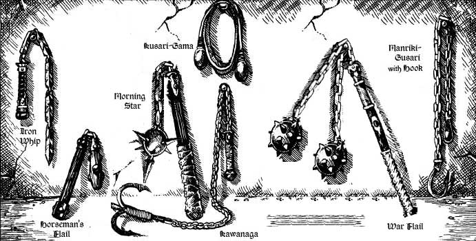
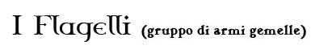
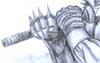
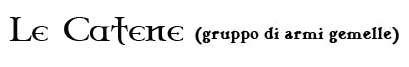

Le armi appartenenti al gruppo dei flagelli sono da considerarsi totalmente diverse dalle armi appartenenti al gruppo delle catene. All'interno dei due gruppi, invece, tutte le armi sono tra loro gemelle.


|
TIPO DI ARMA |
FORZA | COSTITUZIONE | DESTREZZA |
| Morning Star (1) | 13 | 10 | 11 |
| War Flail (1.1) | 14 | 11 | 12 |
| Horseman's Flail (0.8) | 11 | 8 | 10 |
| Iron Whip (1.2) | 12 | 8 | 13 |
|
TIPO DI ARMA |
SIZE (PESO) | DANNO | INIZIATIVA |
| Morning Star | Medium (10 lbs.) | 1d8 (Botta) | +7 |
| War Flail | Medium (14 lbs.) | 2d4 (Botta) | +8 |
| Horseman's Flail | Small (4 lbs.) | 1d4 (Botta) | +4 |
| Iron Whip | Medium (5 lbs.) | 1d4+1 (Taglio) | +3 |
|
TIPO DI ARMA |
COSTO | PARATA | MATERIALE |
| Morning Star | 14 g.p. | 0 | Metallo |
| War Flail | 18 g.p. | 0 | Metallo |
| Horseman's Flail | 4 g.p. | 0 | Metallo |
| Iron Whip | 13 g.p. | 0 | Metallo |
Regole Speciali per i Flagelli
Utilizzando la Morning Star ed il War Flail è possibile effettuare la seguenti manovra di combattimento. Tale manovra, non richiedendo punti combattimento, può essere cumulate con i vari colpi di combattimento, sia generali che speciali.
Attacco di Sfondamento (Abilità minima: Esperto)
Questa manovra può essere utilizzata unicamente sul primo attacco del round effettuato con uno dei suddetti flagelli. Chi utilizza questa manovra di combattimento carica il colpo con incredibile violenza ricevendo una penalità al tiro per colpire di - 1 ed una penalità all'iniziativa di + 2. Se il tiro per colpire ha successo, chi ha effettuato la manovra riceve un bonus di +2 ai danni inflitti con tale attacco. Si noti che questi danni supplementari saranno considerati a tutti gli effetti danni dovuti alla forza dell'attaccante.


Tutte le catene da guerra devono essere utilizzate necessariamente a due mani.
|
TIPO DI ARMA |
FORZA | COSTITUZIONE | DESTREZZA |
| Kusari-Gama (0.9) | 10 | 8 | 13 |
| Manriki-Gusari with Hook (1.1) | 11 | 12 | 13 |
| Kawanaga (1.2) | 12 | 13 | 13 |
|
TIPO DI ARMA |
SIZE (PESO) | DANNO | INIZIATIVA |
| Kusari-Gama | Medium (5 lbs.) | 2d3 (Botta) | +4 |
| Manriki-Gusari with Hook | Medium (7 lbs.) | 1d4+1 (Botta) | +5 |
| Kawanaga | Medium (8 lbs.) | 1d6 (Punta) | +6 |
|
TIPO DI ARMA |
COSTO | PARATA | MATERIALE |
| Kusari-Gama | 3 g.p. | 0 | Legno* |
| Manriki-Gusari with Hook | 5 g.p. | 0 | Metallo |
| Kawanaga | 9 g.p. | 0 | Metallo |
Regole Speciali per le Catene da Guerra
Utilizzando il
Manriki-Gusari with Hook
ed il
Kawanaga è possibile utilizzare il
seguente colpo speciale:
Trascinamento con l'uncino:
Può essere effettuato solo da chi è almeno abile
nell'uso del Manriki-Gusari with Hook e nel
Kawanaga. Con tale colpo speciale è
possibile provare a trascinare a terra il proprio avversario. Questo colpo
speciale non può essere utilizzato sulle creature di taglia Huge o superiore,
nonché su creature che non essendo sorrette da gambe o zampe strisciano al suolo
o vi sono radicate (si pensi ad un cubo gelatinoso o ad un treant). Chi utilizza questo colpo speciale riceve una
penalità al tiro per colpire di - 2 ed una
penalità all'iniziativa di + 1. Se il tiro per
colpire ha successo, chi ha effettuato l'attacco deve superare una prova di
forza. Se la prova fallisce l'attacco avrà provocato solo i normali danni; se la
prova, invece, ha successo la vittima oltre a subire i normali danni dovrà superare un tiro salvezza contro
raggio della morte con i seguenti modificatori:
- bonus di +3 se la vittima è di taglia large
- bonus di +4 se la vittima è dotata di almeno 4 zampe o gambe
- malus di -1 se l'attaccante utilizza un Kawanaga
- malus di -1 per ogni punto combattimento supplementare che l'attaccante ha
dichiarato di voler utilizzare nel colpo speciale durante la fase delle
intenzioni (fino ad un massimo di -4).
Se la vittima fallisce il tiro salvezza la stessa, oltre a subire i regolari
danni, cadrà a terra nella propria posizione (knockdown).
Costo
1 punto combattimento.